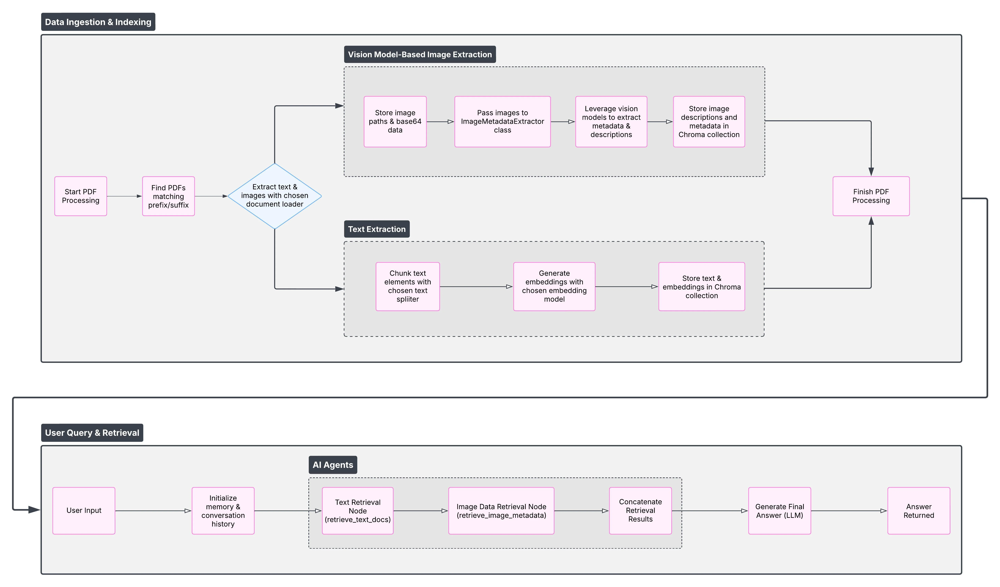
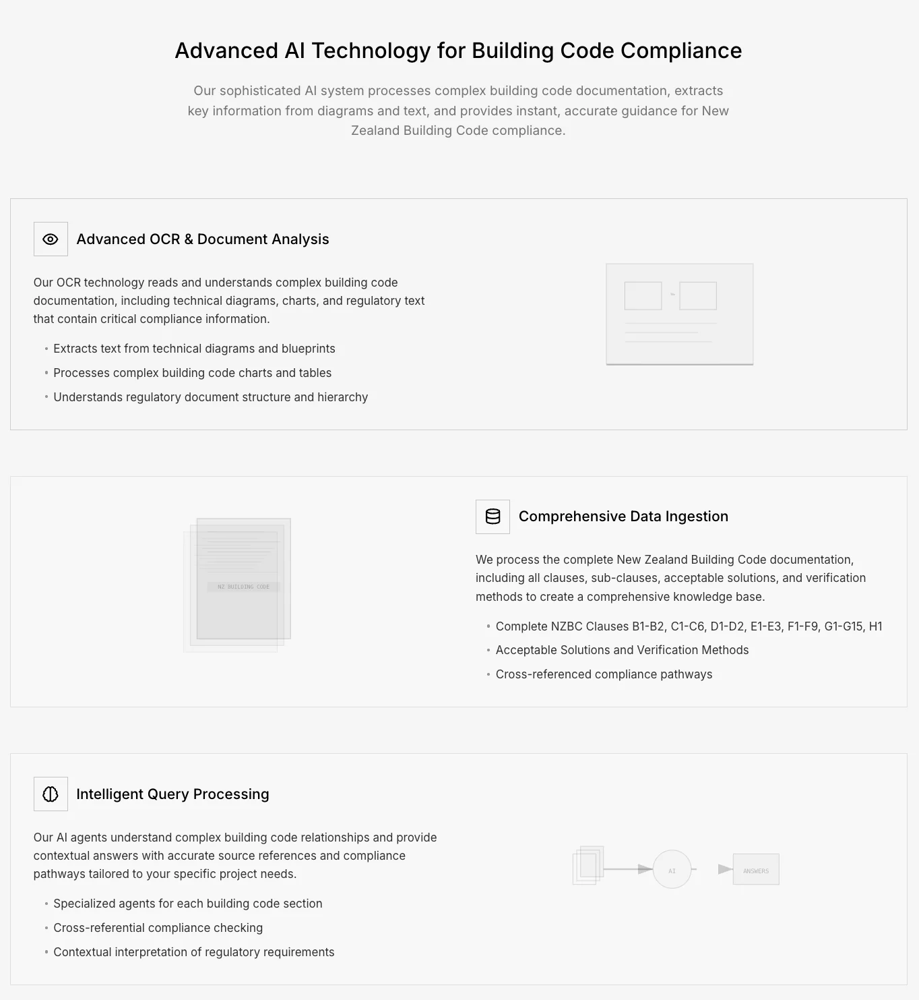
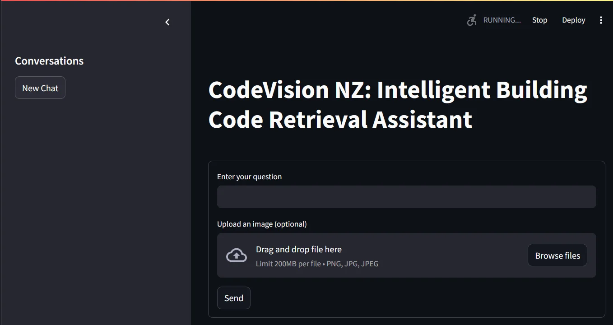
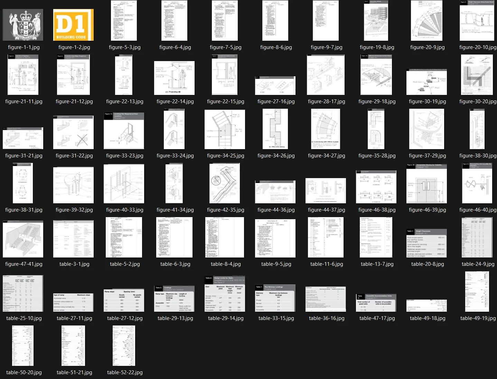

Vision-language captioning
LLaMA Vision via Ollama captions every figure on extraction.
ViT + RAG over building code PDFs
 AI applications / Vision Model RAG
AI applications / Vision Model RAGAn AI-powered personal project that simplifies information retrieval from NZ Building Code documentation, extracting, indexing, and retrieving both textual and visual data from PDFs with an open-source stack. Images pass through an ImageMetadataExtractor where vision models generate descriptive metadata; text is chunked and embedded; both are stored in Chroma. AI agents retrieve the combined text and image data and generate answers via open-source LLMs behind a Streamlit chat interface.
Standard text RAG drops the diagrams. For a code document, the diagram often *is* the answer.
LLaMA Vision via Ollama captions every figure on extraction.
Captions + text chunks share an embedding space in ChromaDB.
LangGraph composes the retrieve → answer → verify path.
Auto-detects Building Code PDFs by filename prefixes/suffixes.
Text and images extracted (Unstructured).
Split into two concurrent streams — image stream and text stream.
Images stored as paths + base64; ImageMetadataExtractor + vision models generate descriptive metadata → Chroma.
Text split into chunks, embedded via SentenceTransformers → Chroma.
AI agents fetch relevant text AND image data by query embedding.
Open-source LLM generates the response in the Streamlit chat UI.
Secure, privacy-focused, and fully open-source end to end.
Vision-model image extraction runs alongside text chunk embedding.
Text and visual data are retrieved together for comprehensive results.
Quick, context-sensitive answers over the indexed documentation.
Explore the material
behind the project.
Presentations, research, and supporting material from the project repository, alongside the original project media.
Original system diagram from the project repository.

Enlarge ↗Read the project overview, setup notes, and technical documentation.
4 images
Select an image to explore.




Have an idea, a challenge, or a different perspective?
I’d love to hear it.
{kind=link}
{kind=link}
{kind=link}
{kind=link}